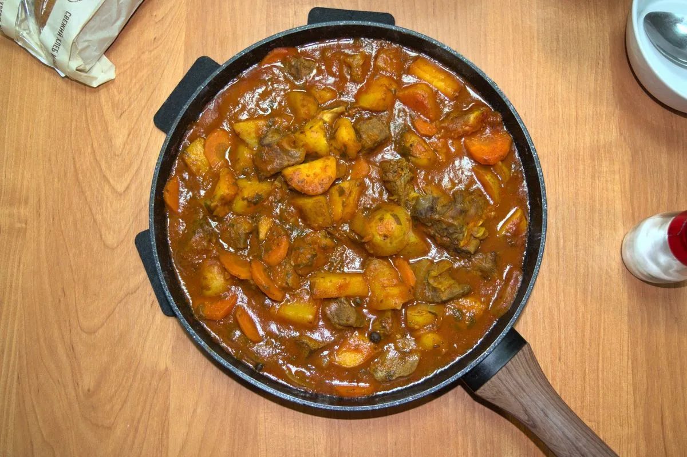

Beef Goulash

Although it takes some time to make, it is actually quite easy to make, and it is a really hearty and delicious recipe, if I do say so myself.
- ⏲️ Prep time: 20 min
- 🍳 Cook time: 90 min
- 🍽️ Servings: 2/3
Ingredients
- 500g beef
- 300-400g potatoes
- 1 carrot
- 1 medium onion
- 12 tablespoons tomato paste
- 500ml water
- 3-4 garlic cloves
- 3-4 bay leaves
- Curcuma
- Paprika
- Oregano
- Parsley
- Caraway
- Basil (optional)
- Cilantro (optional)
- 2-3 champignon mushrooms (optional)
Directions
- Heat up the frying pan and add some oil.
- Cut the potatoes into small pieces and fry them on the frying pan over medium-heat, add some salt.
- Chop the onion.
- Cut the beef into small enough pieces and dust with flour.
- After about 15 minutes of frying the potatoes, add the onions and beef to the pan and fry for another 10-15 minutes, or until brown.
- While the beef, potatoes and onions are frying, cut the carrot and mushrooms, and chop the parsley and cilantro.
- Once the beef is brown, add water to the pan, and add the rest of the ingredients, including salt, black pepper and herbs/spices to taste.
- Mix thoroughly, cover the pan with a lid and stew for about 60-80 minutes over low-heat. While it is stewing, you can get back to doing some other things, like watching memes.
- Remove from stove, serve hot and enjoy with some beer or cider (or your favorite beverage).
Contribution
Originally published at https://www.yaroslavps.com/food/beef-goulash/
- Yaroslav de la Peña Smirnov – website, other website, donate